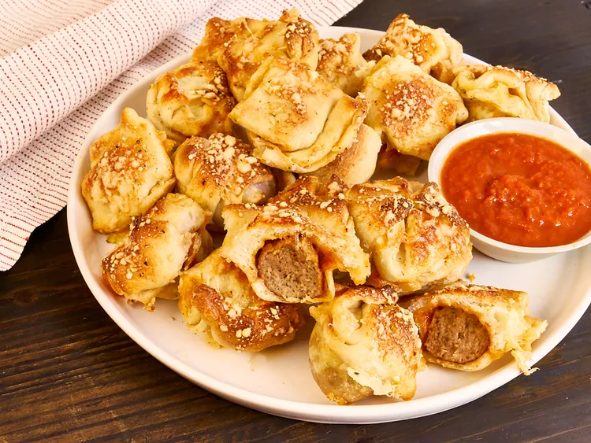

Baso Daging Pedas

Bom slider bakso ini, seperti sandwich bakso Italia seukuran gigitan,
cepat disiapkan dengan bakso beku dan adonan pizza dingin.
Bahan - bahan:
- 2 kaleng (13,8 ons) adonan pizza beku
- 24 bakso beku ukuran pesta, dicairkan sedikit
- 2/3 cangkir saus marinara, ditambah lagi untuk penyajian
- 1 1/2 cangkir keju mozzarella parut
- 3 sendok makan minyak zaitun
- garam dan lada hitam yang baru digiling, sesuai selera
-
bumbu opsional tambahan termasuk serpihan cabai merah yang dihancurkan,
Bumbu Italia, dan bubuk bawang putih atau bawang putih cincang
- 1/4 cangkir keju Parmesan parut segar
Langkah - langkah pembuatan
-
Panaskan oven hingga 400 derajat F (200 derajat C). Olesi loyang muffin
mini dengan minyak semprot.
-
Giling satu kaleng adonan di atas permukaan yang ditaburi sedikit tepung
hingga membentuk persegi panjang yang sedikit lebih besar dari loyang
muffin dan letakkan adonan di atas loyang muffin. Tekan adonan dengan
lembut ke dalam setiap cup muffin. (Atau, letakkan loyang muffin mini
kedua di atas adonan untuk menekan adonan dengan mudah ke dalam setiap
cup.)
-
Taruh bakso ke dalam setiap cup muffin dan taburi dengan saus dan keju
mozzarella secara merata.
-
Giling sisa adonan hingga membentuk persegi panjang yang sama dan
letakkan di atasnya. Tekan adonan untuk menutup setiap bagian, lalu
gunakan pisau untuk memotong adonan di sekeliling setiap cup, membentuk
24 slider bakso.
-
Untuk setiap cup muffin yang terisi, rapatkan sudut atas adonan dengan
sudut bawah di sisi yang berlawanan; ulangi dengan sisi lainnya. Putar
adonan dengan lembut di bagian atas; jepit untuk menutup. Ulangi dengan
semua bagian.
-
Tempatkan minyak dalam mangkuk kecil dan bumbui dengan bumbu opsional
jika diinginkan. Olesi setiap irisan bakso dengan minyak dan taburi
dengan keju Parmesan parut secara merata.
-
Panggang dalam oven yang sudah dipanaskan hingga berwarna cokelat
keemasan dan matang, 22 hingga 24 menit. Sajikan dengan saus marinara
tambahan untuk cocolan.
Halaman Utama